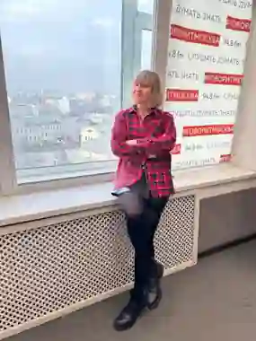
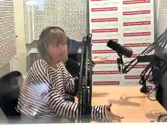

Наталия
Троицкая
Более 20 лет в радио и медиа. Интервью с врачами, учёными и лидерами здравоохранения. Форумы, подкасты, спецпроекты и подготовка экспертов к публичным выступлениям.

Сложное — понятно. Серьёзное — живо.
Работаю на стыке медицины, журналистики и публичной коммуникации. Помогаю экспертам говорить ясно, а аудитории — не теряться в профессиональном языке.

Журналистика, в которой человек важнее формулировки
Веду медицинские программы на радиостанции «Говорит Москва» 94.8 FM, работаю с врачами разных специальностей, пациентскими историями, научными и общественными темами.
Моя сильная сторона — разговор: найти точный вопрос, снять напряжение, удержать темп и сделать так, чтобы эксперт звучал убедительно без канцелярита и перегруза.
От микрофона до большой сцены
Формат собирается под задачу: медицинский форум, корпоративный проект, клиника, технологическая компания, бренд или экспертная команда.
Модерация форумов
Панельные дискуссии, круглые столы, медицинские конференции и специальные сессии.
Интервью и подкасты
Разговоры с врачами, учёными, руководителями и героями — от идеи до готовой драматургии выпуска.
Подготовка врачей-спикеров
Камера, интервью, сложные вопросы, простая речь и уверенное публичное выступление.
Медиапродюсирование
Концепция, темы, спикеры, сценарий, редактура и запуск медицинского контента.
Контент с мероприятий
Интервью со спикерами, медиазона, короткие видео и материалы для PR и digital.
Международные форматы
Работа с русскоязычной аудиторией и экспертами на международных мероприятиях.
«Доктор, можно честно?»
Мультимедийный проект о здоровье без рекламной интонации и сложных формулировок. Врач, герой и журналист говорят о том, что действительно волнует людей: диагноз, выбор лечения, страх, качество жизни, новые технологии и границы современной медицины.
Нативная интеграция без потери доверия
Партнёр сезона, тематическая линия, спецпроект, брендированная студия, digital-серия или формат с мероприятия.

Разговор, который не звучит заученно
В студии важны не только факты. Важно слышать человека, вовремя задать следующий вопрос и перевести сложную медицинскую тему на язык слушателя.
Работаю и с опытными публичными врачами, и с теми, кто впервые оказывается перед микрофоном или камерой.

Модератор, который держит смысл и темп
Медицинская дискуссия не должна превращаться в череду длинных докладов. Я собираю разговор: связываю позиции экспертов, задаю неудобные, но корректные вопросы и вовлекаю аудиторию.
Открыта к проектам в России и за рубежом — особенно к событиям с русскоязычной аудиторией, медицинскими и технологическими темами.
Пригласить на мероприятиеПослушать, посмотреть, почитать
Официальные страницы программ и авторские площадки.
Давайте делать сильные медицинские проекты
Модерация, интервью, подкасты, подготовка спикеров, спецпроекты и международные мероприятия.